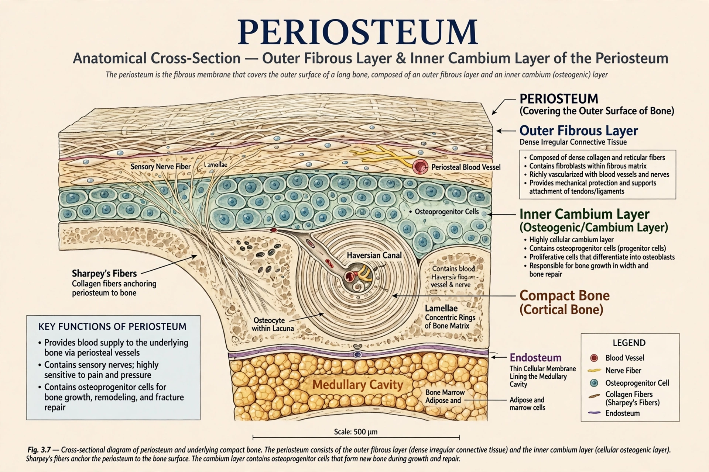

| Periosteum | |
|---|---|
 | |
| System | Skeletal |
| Location | Outer surface of all bones except at joints |
| Latin | periosteum |
The periosteum is a membrane that covers the outer surface of all bones, except at the articular surfaces of long bones, where cartilage is present. It consists of dense irregular connective tissue and is essential for bone growth, repair, and nutrition.
The periosteum has an outer fibrous layer, containing fibroblasts, blood vessels, and nerves, and an inner cambium (osteogenic) layer, containing osteoprogenitor cells and osteoblasts that form new bone. Sharpey's fibres anchor the periosteum to underlying bone. In children the periosteum is thicker, more vascular, and more osteogenic than in adults.
Periosteal cells drive appositional growth (increase in bone width), fracture healing, and remodelling. The periosteum supplies blood to cortical bone and provides attachment for tendons and ligaments. Its rich nerve supply makes it highly sensitive to pain.
Periostitis is inflammation of the periosteum, seen in infections and in medial tibial stress syndrome (shin splints). Periosteal reaction on imaging can indicate fracture, infection, or tumour, including osteosarcoma. Subperiosteal haemorrhage can occur in scurvy and trauma.